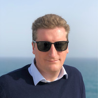

Gian Luca Dalla Torre
IT Project Manager
Gian Luca Dalla Torre
IT Project Manager
Contatti
Nome e cognome
Gian Luca Dalla Torre
Indirizzo
Via Cappuccini 37, 31033 - Castelfranco Veneto (TV)
Telefono
+39 392 5447729
Luogo e data di nascita
Castelfranco Veneto (TV), 25/10/1976
Cittadinanza
Italiana
Bio
Sono un Application Developer, Database Administrator, System Administrator, Mobile Developer, VMWare specialist e IT Project Manager con vari anni di specializzazione in molteplici settori.
Sono particolarmente interessato in architetture multitier client/server (J2EE, SOA, CakePhp, Django, Elastic Search,RabbitMQ, NoSQL) le tecnologie del Web 2.0 (Ajax, Ancular, React) e la gestione delle basi di dati sia relazionali che NoSQL.
Negli ultimi anni la mia attività si è focalizzata sulla gestione dei reparti IT e in particolare sul ciclo di vita dello sviluppo del software (dall'analisi alla consegna al cliente) e sull'aggiornamento dell'infrastruttura tecnica.
Sono particolarmente interessato in architetture multitier client/server (J2EE, SOA, CakePhp, Django, Elastic Search,RabbitMQ, NoSQL) le tecnologie del Web 2.0 (Ajax, Ancular, React) e la gestione delle basi di dati sia relazionali che NoSQL.
Negli ultimi anni la mia attività si è focalizzata sulla gestione dei reparti IT e in particolare sul ciclo di vita dello sviluppo del software (dall'analisi alla consegna al cliente) e sull'aggiornamento dell'infrastruttura tecnica.
Esperienze lavorative
GestionaleAuto.com S.r.l.
Bassano del Grappa - VI
Ottobre 2012 - Presente
Product Manager
- Responsabile dell'area sviluppo
- Utilizzo di metodologie agili per la gestione del lavoro (Scrum, Kanban)
- Sviluppo applicazioni mobile iOS e Android
- Research and Development su vari progetti Automotive
Edistar S.r.l.
Vedelago - TV
Gennaio 2010 - Settembre 2012
System Engineer, System Administrator, Software analyst & developer
- Sviluppo e gestione applicativi personalizzati per l’interazione con l’infrastruttura multimediale di Edistar (SMS, IVR, FAX, Chiamate Inbound & Outbound, Voice XML)
- Sviluppo interfacce web 2.0, basate su ExtJS, jQuery, HTML5, CSS 3
- Gestione e manutenzione Datacenter interno (VMWare, IBM Tivoli)
Tria S.r.l.
Padova - PD
Maggio 2009 - Gennaio 2010
Responsabile area sviluppo
- Gestione di un team di 4 persone
- Gestione dei progetti di integrazione basati sul paradigma Service Oriented Architecture (SOA)
H - Care S.r.l. (H - Farm startup)
Roncade - TV
Settembre 2007 - Maggio 2009
Software analyst & developer
- Analista e sviluppatore sul software HDA – Human Digital Assistant (assistente virtuale digitale)
- Sviluppo modulo “brain” per la gestione di grafi complessi – Tecnologia Java – J2EE
- Sviluppo modulo “campaign manager” per la creazione di campagne pubblicitarie – Tecnologia Java – JMX – Repliche in Failover
- Sviluppo modulo “producer on demand” per la creazione di video dinamici realtime – Tecnologia Ajax e interfacce evolute (ExtJS)
NE - T by Telerete Nordest s.r.l.
Padova - PD
Dicembre 2001 - Settembre 2007
Responsabile Area Software
- Implementazione dell'intero sistema di ticketing della Cappella degli Scrovegni - Prenotazione web e Call Center, Erogazione biglietti, Reportistica Fatturazione (J2EE - .NET)
- Analisi e sviluppo di applicativi personalizzati per il Comune e la Provincia di Padova, nonché per altri enti pubblici, con tecnologie Java, PHP, .Net
- Implementazione di un Content Management System per il portale http://www.venetolavoro.it (Veneto Lavoro) basato su tecnologia J2EE
Istruzione e formazione
25 luglio 2002
Abilitazione all’esercizio della professione di Ingegnere dell’informazione junior
Votazione: 237/24019 dicembre 2001
Laurea di primo livello in Ingegneria Informatica
conseguita presso la facoltà di Ingegneria dell’Università degli Studi di Padova – Dipartimento di Elettronica e Informatica (D.E.I.).Tesi: "Progettazione di un prototipo per l’integrazione di device mobili palmari con un sistema di e – business" (relatore: prof. Michele Moro).
Votazione: 102/110
Giugno 1995
Diploma di maturità scientifica
conseguito presso il Liceo Scientifico Statale "Giorgione", Castelfranco Veneto (TV)Conoscenze informatiche
Sistemi operativi
- Linux: amministrazione di server con gestione di Firewall, Application Server, Networking e servizi di sistema come LDAP, Samba, Posta elettronica (Zimbra, Postfix)
- Windows: amministrazione di Application server
- Mac
Sviluppo backend
Negli anni ho acquisito molta esperienza nell’utilizzo e amministrazione dei più svariati ambienti di sviluppo, da Java a .NET, Delphi, LAMP, Python, Go su vari application server (JBoss, Tornado, Flask, Apache, Nginx)
Sviluppo frontend
Partendo da HTML e CSS, la mia esperienza si sviluppa su vari ambienti Javascript come JQuery, ReactJS, Angular, ExtJS
Sviluppo mobile
Ho sviluppato applicativi mobile con tecnologie come Sencha Touch, Ionic, Objective C e Swift
Sistemistica
Ho la capacità di gestire server in ambito Linux/Windows e progettare soluzioni per gestire:
Ho esperienza di gestione della struttura Amazon AWS (creazione e installazione di servizi, mantenimento, contenimento dei costi, gestione dei picchi).
Negli anni, inoltre, mi sono specializzato nella gestione di datacenter basati su server Blade IBM e sistema di virtualizzazione ESX/VmWare.
- Networking
- Security
- High availability
- Monitoring di sistemi (Nagios, Zabbix)
Ho esperienza di gestione della struttura Amazon AWS (creazione e installazione di servizi, mantenimento, contenimento dei costi, gestione dei picchi).
Negli anni, inoltre, mi sono specializzato nella gestione di datacenter basati su server Blade IBM e sistema di virtualizzazione ESX/VmWare.
Tecnologie principali utilizzate
Oltre ai database relazionali più noti (Oracle, MSSQL, Sybase, Postgres, MySQL di cui padroneggio i vari dialetti SQL), ho lavorato con strumenti di ultima generazione come ElasticSearch e MongoDB, svariati application server J2EE (JBoss, Sybase ASE, JCaps) e web server (Apache, Nginx, IIS)
Conoscenze linguistiche
Italiano
Madrelingua
Inglese
Buona conoscenza lingua parlata e scritta, perfezionata durante soggiorni di studio e scambi culturali in Irlanda e negli Stati Uniti
Informazioni supplementari
- Amo il mio lavoro e mi appassionano sia l'analisi e lo sviluppo, sia l'organizzazione delle risorse e l'interazione con clienti e fornitori
- Sono una persona flessibile ed affidabile
- Ho collaborato con la rivista “PC Magazine” per la pubblicazione di alcuni articoli della sezione “Come fare” (2001)
- Ho co-fondato l’associazione di volontariato “Casteo.Net” (1997 – 2000) con l’obiettivo di diffondere le conoscenze informatiche nel territorio
- Hobbies and sport: cinema, lettura, viaggi, musica, nuoto, pallacanestro